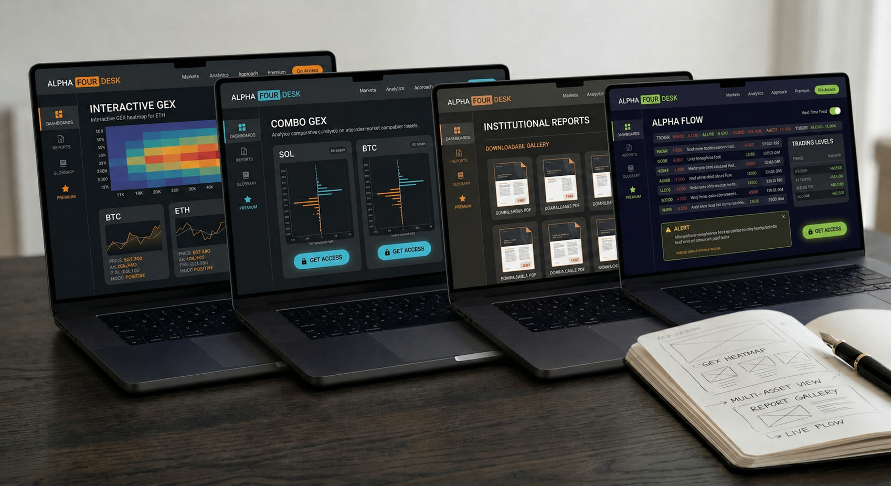

Щоденний аналіз BTC, ETH і SOL
Компактний, але повний погляд на три ключові інструменти без розрізнених думок.
BTC / ETH / SOL · ринкова карта дня
Ключові рівні, сценарії, ризик і логіка дня в одній зібраній ринковій карті. BTC, ETH і SOL читаються через гамма-режим, опціонні рівні та найближчі експірації, щоб було видно, де ціна може стабілізуватися, де можливе прискорення і які зони справді формують сесію.
Прогнози виходять щодня після 08:00 GMT.
Що це
Alpha Four Desk - це щоденна аналітика крипторинку для трейдерів, яким потрібен спокійний, структурований погляд на BTC, ETH і SOL. Прогнози виходять щодня після 08:00 GMT. Замість потоку думок ви отримуєте сценарну карту дня: ключові рівні, робочу область сценарію та умови, за яких він зберігає силу або втрачає її.
Результат — не розмитий прогноз, а структурований погляд на денний режим і ключові рівні: де сценарій зберігає силу, де ймовірна боротьба, а де структура підказує перегляд.

Для кого
Для внутрішньоденних трейдерів, яким потрібна чітка карта дня без зайвого шуму.
Для позиційних трейдерів, які хочуть бачити сценарії, а не реагувати на кожну свічку.
Для приватних інвесторів і команд, яким важливі рівні, контекст і точка зламу сценарію.
Що всередині
Не просто огляд ринку, а сценарна карта дня: ключові рівні, робоча область сценарію, ризик і точка, де його структура ламається.
Компактний, але повний погляд на три ключові інструменти без розрізнених думок.
Зони тяжіння, відскоку та зламу сценарію, які мають значення для поточної сесії.
Карта можливих результатів: базовий сценарій, альтернативний сценарій і умови переходу.
Ви бачите, де сценарій ще чинний, а де його вже не варто захищати.
Ми показуємо не лише рівні, а й чому саме ці зони важливі сьогодні.
Наприкінці дня план порівнюється з тим, що ринок фактично зробив.
Відмінність
Alpha Four Desk не намагається перекричати ринок. Тут аналітика побудована так, щоб трейдер одразу бачив структуру дня: де знаходиться тиск, які рівні справді важливі, який сценарій є базовим і в якій точці його вже не можна захищати.
Замість потоку шумних думок ви отримуєте робочу карту, де кожне спостереження прив'язане до рівня, режиму і сценарію. Це прибирає зайву метушню і дозволяє дивитися на ринок через зрозумілу логіку, а не через випадкові емоції всередині свічки.
Такий підхід корисний не лише для входу, а й для дисципліни протягом усієї сесії. Він заздалегідь показує, де ціна може сповільнитися, де рух може прискоритися, а де ідея втрачає силу і потребує перегляду.
Кожен висновок прив'язаний до ринкового режиму, рівня і логіки руху ціни, а не до випадкового внутрішньоденного імпульсу.
У випуску залишається тільки те, що допомагає працювати з ринком сьогодні: контекст, ключові зони, сценарій, ризик і точка, де сценарій втрачає силу.
Спочатку формується карта ймовірних варіантів, потім умови підтвердження і точка зламу сценарію. Так легше тримати дисципліну і вчасно змінювати план.
Метод
Опційна структура ринку допомагає бачити ті зони, де ціна найчастіше змінює свою поведінку. Йдеться не про випадкові лінії на графіку, а про ключові рівні, де дилерське хеджування і концентрація опційної експозиції починають відчутно впливати на рух ринку.
Одні рівні працюють як магніт і стабілізатор ціни. Інші - як бар'єр, після пробою якого рух може різко прискоритися. Саме тому в одні дні ринок тяжіє до діапазону і повернення до середнього, а в інші - до імпульсного руху і зриву рівнів.
Для трейдера це важливо, тому що такі зони допомагають заздалегідь розуміти, де ціна може сповільнитися, де ймовірна боротьба, а де сценарій перестає працювати. Це дозволяє дивитися на ринок не як на хаос, а як на структуру: з режимом, рівнями, сценаріями і зрозумілими точками ризику.
На цій основі будується щоденна сценарна карта по BTC, ETH і SOL. Спочатку визначається режим ринку, потім виділяються ключові рівні, після чого формується базовий і альтернативний сценарій, задається ризик і позначається точка зламу сценарію.
Спочатку визначається, чи схильний ринок до стабілізації або до прискорення руху.
Потім виділяються зони, де ціна найчастіше сповільнюється, утримується або ламає сценарій.
Після цього будується базовий і альтернативний план руху ціни.
Наприкінці задається точка, після якої сценарій більше не вважається актуальним.
Приклад карти
Демо-дані показують структуру звіту. Реальні значення оновлюються в щоденному аналізі.
Прогноз проти факту
Щовечора звіряємо ранковий сценарій з тим, що ринок зробив насправді. Без ретуші: часткове влучення — це часткове влучення.
Утримання 74 500–75 000 і повернення до 75 554
Утримання 2 275–2 300 і повернення до 2 345
Локальне повернення до 85,0–86,0
Найкращий розбір дня — по SOL. Робоча ідея по BTC. Слабша реалізація по ETH.
Вечірній розбір прогнозу проти факту входить до Premium-підписки.
Як читати
Прогноз не говорить “купити чи продати”. Він показує, де сценарій живий, де підтверджується, де може з’явитися угода і де ідея ламається.
Спочатку читається поведінка ринку, а не готова команда на угоду.
Кожен рівень читається через функцію: база, магніт, бар’єр, зона залипання або ризик.
Дотик до рівня не дорівнює поверненню під контроль. Важливі утримання і перший нормальний відкат.
Long від бази, long за підтвердженням, short від бар’єра або short за зламом.
Positive gamma не означає автоматичний long, а рівень вище ціни не стає ціллю сам по собі.
Короткі правила: де сценарій живий, де посилюється, де ламається і де краще чекати.
Ціни
Basic - сильна точка входу в щоденну ринкову картину. Premium - основний формат для глибшої логіки, ризику, альтернативного сценарію та розбору "прогноз проти факту". Прогнози виходять щодня після 08:00 GMT.
Basic
Короткий щоденний звіт для самостійної роботи: ключові рівні, базовий сценарій і точка зламу сценарію.
Premium
Основний продукт Alpha Four Desk: глибша робота зі сценарієм для кожного інструмента, з логікою, ризиком і умовами перегляду плану.
Заявка оформлюється через Telegram-бота @A4DeskAccessBot: оберіть тариф, і бот відкриє заявку. Для ручного зв’язку можна написати @A4Desk. Прогнози виходять щодня після 08:00 GMT.
FAQ
Ні. Це сценарна аналітика: рівні, ймовірності, контекст, ризик і злам сценарію. Остаточне рішення завжди ухвалює користувач.
Для внутрішньоденних і позиційних трейдерів, яким потрібна спокійна щоденна карта для BTC, ETH і SOL.
Ми використовуємо опціонні, ф'ючерсні та спотові дані по BTC, ETH і SOL з кількох джерел: Deribit, OKX, Bybit, Binance, Laevitas і Amberdata.
Дані агрегуються та звіряються між собою, щоб не спиратися на один майданчик і бачити стійкішу картину опціонної структури, ліквідності та ключових рівнів.
Тому що карта дня будується там, де справді є ліквідний ринок, а не просто рух ціни на графіку.
У BTC, ETH і SOL достатньо обсягу в опціонах і деривативах, щоб читати рівні, зони ризику та поведінку великих учасників. Ми не розпорошуємо увагу на десятки монет: краще дати точну карту по трьох сильних інструментах, ніж шумну картинку по всьому ринку.
Оберіть Basic або Premium і натисніть «Запросити в Telegram». Відкриється бот @A4DeskAccessBot, який прийме заявку.
Прогноз і ринкова карта публікуються щодня після 08:00 GMT.
Ні. Матеріал має аналітичний та інформаційний характер і не є індивідуальною інвестиційною рекомендацією.